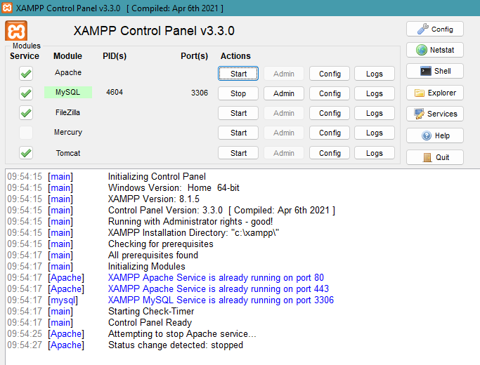

Awal-awal Lakukan menginstalan filezilla di OS anda. Untuk link downloadnya silahkan klik
disini.
Setelah anda masuk ke link downloadnya, akan ada tampilan seperti berikut :
Disini kita akan menginstal FileZilla versi client, jadi disini klik Download FileZilla Client.
Setelah itu klik Download FileZilla Client lagi, kemudian klik download, maka
proses downloadopun akan dimulai
Lakukan penginstalan sesuai prosedur yang sudah disediakan oleh FileZilla dan tunggu proses
penginstalannya selesai.
Setelah FileZilla diinstal, Silahkan login ke cpanel
Masuk ke menu Files, Kemudian klik FTP Accounts
Setelah itu akan muncul tampilan sebagai berikut ini, silahkan isi bagian login
sesuai dengan nama yang sudah kalian tentukan. sebagai contoh disini saya mengisinya
dengan nama latihan
Di kolom pengisian password kalian bisa menggunakan password yang sudah kalian
tentukan, akan tetapi ada beberapa persyaratan yang harus dipenuhi, yaitu harus
menggunakan angka, simbol dan berbagai syarat lainnya. Untuk mempermudah, silahkan
klik password generator. Maka akan muncul kolom seperti berikut ini :
Akan muncul password dalam bentuk random, silahkan di copy kemudian salin ke
perangkat lunak pengolah kata, seperti notepad atau ms.word dan simpan. Setelah itu
centang "I have copied this password in a safe place." dan klik Use Password.
Setelah itu klik "Create FTP Account", Maka akan akun FTP yang sudah dibuat akan
muncul di bagian FTP Account
Setelah itu klik configure FTP Client, maka akan muncul "Manual settings"
copy FTP Username kalian kemudian pastekan di kolom Username yang ada di FileZilla
Begitu pula dengan FTP Server dan port, Pastekan di kolom Host dan port yang ada di FileZilla
Untuk password, silahkan masukkan password yang sudah dibuat di notepad tadi
Tunggu prosesnya hingga FileZilla terhubung dengan FTP akun
Jika sudah berhasil Terhubung, Maka akan muncul konfigurasinya seperti berikut ini
Untuk membedakan File Lokal dan File FTP silahkan perhatikan
gambar ini :
File lokal adalah file yang ada di pc anda atau di komputer sendiri, sedangkan file ftp adalah File
yang sudah dibuat di cpanel tadi.
Lakukan drop dari salah satu file dari lokal ke FTP untuk menguploadnya, sebagai contoh disini
saya akan Mengupload File gambar yang bernama "LOGO TECH"
Untuk mengecek berhasil atau tidak, silahkan masuk ke Files di cpanel,
lalu masuk ke File manager. Biasanya File yang sudah di Upload tadi akan tersimpan
di sebuah folder yang bernama sesuai dengan nama domain anda sendiri. Kemudian
akan ada folder yang sesuai dengan nama FTP Account, seperti punya saya yang
bernama latihan.
Setelah itu masuk ke file tersebut, maka akan muncul file yang sudah di drop tadi atau
diupload.
2. Cara Menghubungkan Database Dengan User
Langkah awal yaitu login ke cpanel dan kemudian masuk ke menu Databses
Masuk ke menu MySQL Databases
Setelah akan muncul Tampilan seperti berikut ini, silahkan masukkan buat databsenya
terlebih dahulu, Disini saya membuat database dengan nama latihan
Kemudian klik Create Databases. Jika sudah selesai, kembali ke menu MySQL Databses.
Database yang sudah dibuat akan muncul di tampilan Current Databases
Untuk mengecek database yang sudah dibuat, silahkan kembali ke menu cpanel,
kemudian masuk ke menu databases dan klik phpMyAdmin
Maka akan masuk ke halaman phpMyAdmin dan database yang sudah dibuat akan tampil
Setelah Database sudah dibuat, maka lanjut ke proses pembuatan user database. Untuk pembuatan
user database yaitu kembali ke menu MySQL Databases, lalu scroll ke bawah hingga menemukan
MySQL Users.
Silahkan isi nama user dengan nama kalian, disini saya mengisi user dengan nama "ry" dan
passwordnya silahkan buat sendiri atau bisa menggunakan Password generator password. Jika
menggunakan Password generator, maka jangan lupa untuk menyimpannya di notepad.
User yang sudah dibuat akan muncul seperti gambar berikut ini :
jika sudah, maka akan muncul kolom databases sebagai database yang akan dihubungkan dengan user. Jika
sudah tampil seperti gambar di atas, Klik "add", Maka akan muncul tampilan seperti berikut ini
Di bagian ini kalian akan memberikan akses apa saja yang bisa dilakukan oleh user, Biasanya
yang paling sering dilakukan adalah akses CRUD (Create, Read Update, Delete). Karena
Disini untuk pengguna dasar, klik "ALL PRIVILEGES" Untuk memberikan semua hak akses ke user.
Setelah itu klik "Make Changes"
Jika sudah selesai maka akan muncuk notifikasi sukses seperti berikut ini
Maka proses menghubungkan user dengan database sudah berhasil
3. Remote Database
Meremote databse yaitu membuat data atau input baru yang ada di database cpanel kita Melalui
command line yang ada di pc atau labtop. Sebagai contoh disini saya menggunakan CMD yang ada di
pc atau labtop Untuk menambah sebuah tabel baru yang ada di database yang sudah dibuat tadi. Untuk
mengetahui lebih lanjut, silahkan ikuti langkah-langkah berikut ini :
Pertama-tama Masuk ke menu databases yang ada di cpanel, Kemudian klik Remote MySQL
Akan muncul tampilan berikut, di kolom pertama masukkan alamat ip client yang bisa mengakses
database. Untuk memberikan semua akses, masukkan tanda "%", Kemudian klik "Add Host"
Akses yang sudah dibuat tadi akan muncul di bagian Manage Access Hosts
Di menu XAMPP, nyalakan MySQL dengan cara mengklik ikon start

Berikutnya, Kita akan mengaktifkan databases yang akan kita remote. Ada 2 cara untuk mengaktifkannya,
yaitu dengan cara masuk ke cmd, dan yang kedua masuk ke Shell langsung yang ada di XAMPP Control Panel.
untuk yang pertama kali saya tunjukkan yaitu menggunakan cmd. Caranya buka cmd kemdian masukkan command
berikut ini :
--> cd xampp/mysql/bin --> mysql -h <"hostip"> -u <"username"> -p
Sebelum memasukkan command tersebut, pastikan bahwa posisi folder di cmd anda berada di c. Biasanya
ketika membuka cmd, posisi folder ada di direktori C:\Users\<"nama user">. Untuk
masuk ke direktori c, masukkan perintah "cd..", artinya kita naik satu folder, sehingga berubah benjadi
"C:\Users". naik satu folder lagi sehingga posisi foldernya berada di direktori C:\. Setelah itu masukkan
command yang ada di atas.
Setelah memasukkan command di atas, tekan "enter", Maka akan muncul kolom pengisian password, masukkan
password dari user MySQL yang sudah dibuat. Setelah memasukkan password tekan "enter", maka akan muncul
tampilan seperti berikut ini
Artinya login berhasil.
Untuk mengecek databases, masukkan command :
--> show databases;
Maka databases dari user yang sudah dibuat tadi akan muncul.
Selanjutnya masuk ke database yang sudah dibuat tadi, disini database saya bernama "rykonden_Latihan",
Jadi masukkan command :
--> "use <"nama database">;"
Kemudian tekan enter
Setelah itu buat tabel melalui cmd. untuk penulisan querynya yaitu :
--> create table <"nama tabel"> (nama_kolom <"tipe data"> (nilai atau jumlah karakter))
Sebagai contoh, disini saya akan menambahkan tabel yang bernama "t_mahasiswa" dengan kolom nim, nama,
dan prodi, sehingga saya memasukkan query :
--> create table t_mahasiswa (nim int, nama varchar(50), prodi varchar(50));
Jika muncul pesan "Query OK...", Berarti tabel berhasil dibuat.
Setelah itu cek tabel yang ada di database dengan cara memasukkan query :
--> show tables;
Maka tabel yang dibuat tadi akan muncul, Seperti punya saya yang bernama "t_Mahasiswa"
Untuk melihat Struktur tabel, masukkan query :
--> describe nama_tabel
Sebagai contoh, disini saya akan melihat struktur tabel "t_mahasiswa", maka saya memasukkan
query :
--> describe t_mahasiswa
Maka struktur tabel tersebut akan tampil.
kemudian cek database tersebut di phpMyAdmin yang ada di cpanel, caranya yaitu
login cpanel, masuk ke menu databases, klik phpMyAdmin
Di tampilan phpMyAdmin, klik nama database, maka tabel yang dibuat tadi akan muncul
klik nama tabel untuk melihat kolom yang sudah dibuat, disini nama tabel yang saya buat adalah
t_mahasiswa
Maka kolom tabel akan muncul.
Jika anda ingin menambahkan nilai dari tabel, masukkan query seperti berikut ini di cmd :
--> insert into nama_tabel values (nilaikolom1, nilai kolom2,...)
Sebagai contoh, disini saya akan menambahkan nilai di kolom nim dengan angka "21501038", nama dengan
"rykondengis", dan prodi dengan "Teknik Informatika", Maka query yang akan saya masukkan adalah :
--> insert into t_mahasiswa values (21501038,"rykondengis","Teknik Informatika")
Setelah itu cek di phpMyAdmin dari user tersebut melalui cpanel
Maka hasil dari input tadi akan masuk ke dalam tabel yang sudah dibuat
Meremote dengan menggunakan Shell yang ada di software XAMPP Control Panel
Untuk menggunakan Shell ini, sebenarnya sangat mudah dan command-nya sama saja, Karena
masih termasuk dalam cmd, akan tetapi menggunakan Shell akan sangat mudah karena hanya dengan menekan ikonnya saja.
Untuk langkah-langkahnya yaitu sebagai berikut :
Buka software XAMPP
klik ikon Shell yang ada di sebelah kanan
Maka akan muncul tampilan seperti berikut ini
Jika di cmd kita harus masuk ke direktori c:\xampp\mysql\bin, Maka di
Shell ini kita tidak perlu memasukkan command untuk masuk ke direktori tersebut, Karena
dengan menggunakan ini kita langsung memasukkan command untuk masuk ke user MySQL.
--> -h <"hostip"> -u <"nama user"> -p
Kemudian masukkan passwd.
Untuk semua query membuat database itu sama saja seperti query yang ada di cmd.